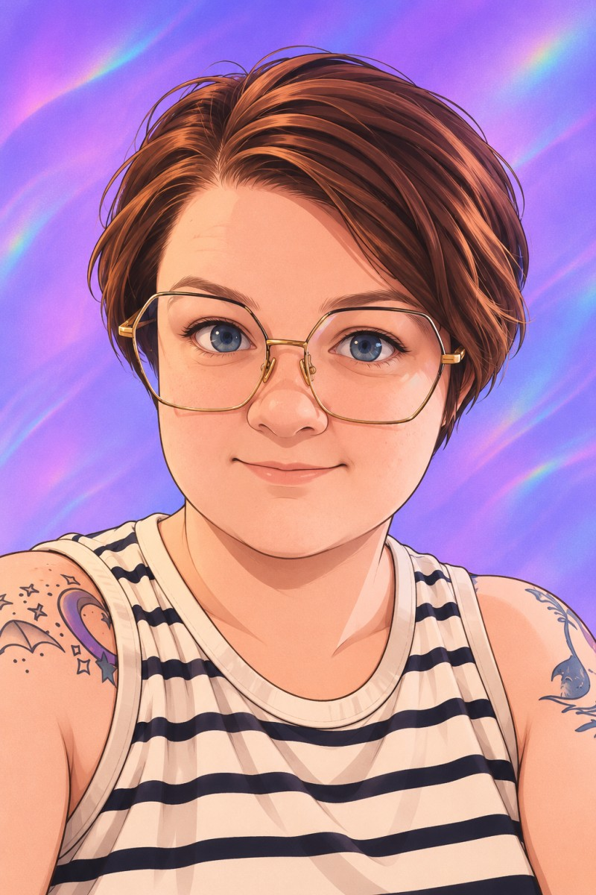
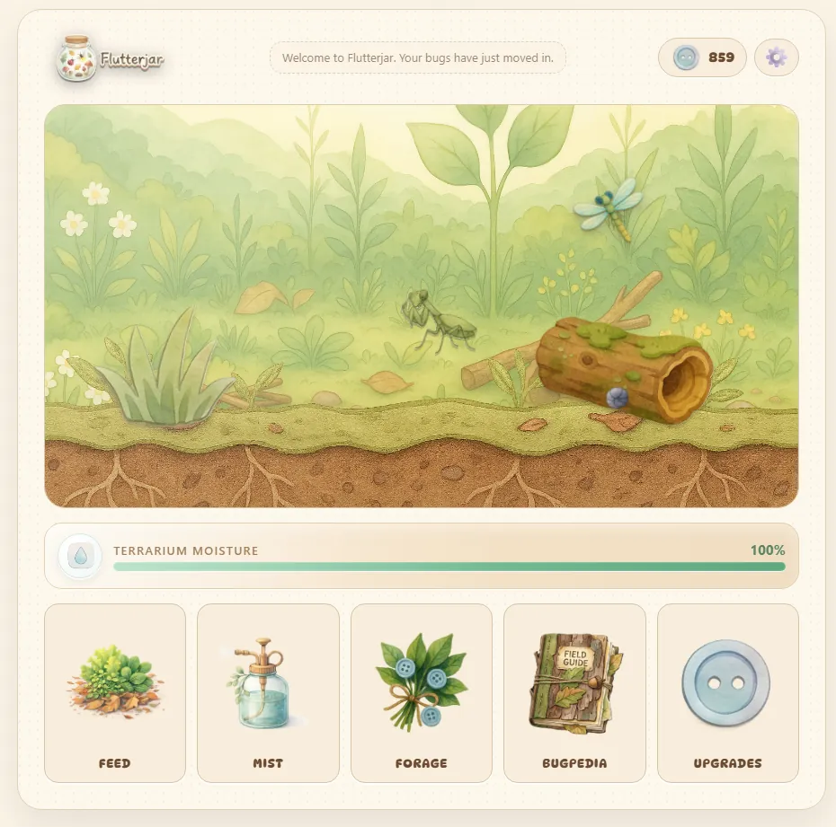
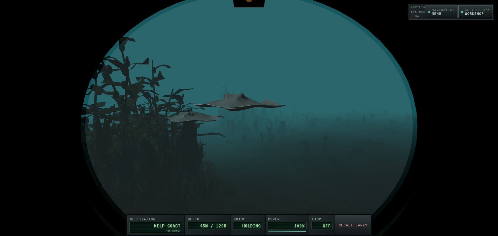
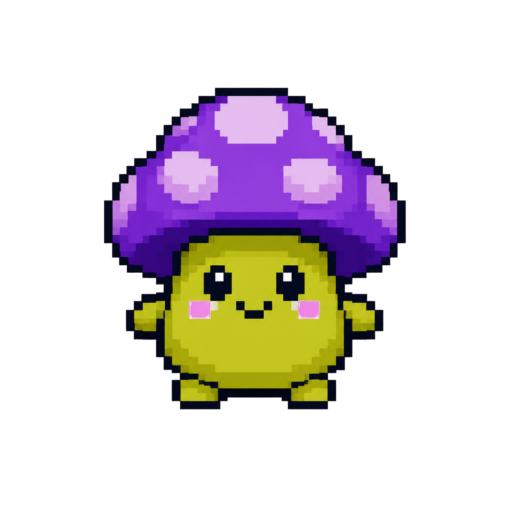
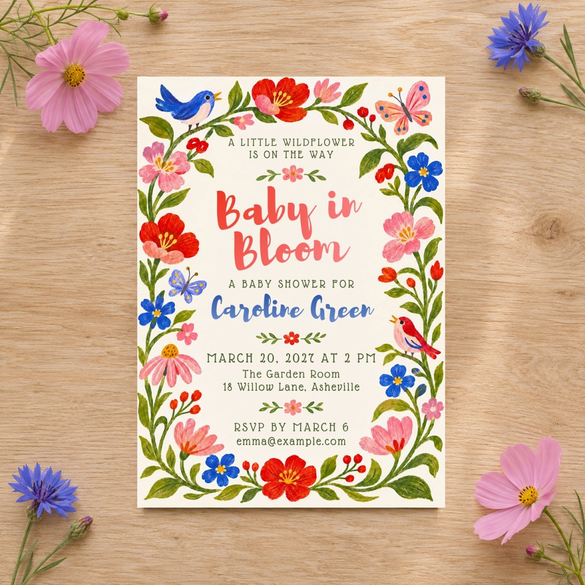

Final Settlement
A noir point-and-click mystery about a dead man who never arrived.
Play the demo Read the case studyI’m Shaylee Smith. I make browser games about uncanny places and small living worlds. I also build practical tools and design editable invitations through Static Symbiosis.

A noir point-and-click mystery about a dead man who never arrived.
Play the demo Read the case study
A gentle terrarium game about tiny bugs and a growing ecosystem.
Play Flutterjar Explore the game design
A cozy fantasy RPG about gathering adventurers, sending them on expeditions, and returning later to see what happened.
See expedition development
Explore in a research submersible, photograph marine life, and bring your findings back to the surface.
See dive development
A responsive plant-care app for collections, care, and daily checks.
Open Root Record See how it was builtEditable digital invitations
Editable invitations for birthdays, baby showers, holidays, and other celebrations. Find playful themes, botanical details, and designs with a slightly uncanny edge. Personalize the details for your event.
Shop all invitations on Etsy
For other makers
I release practical art and interface resources for games, streams, visual novels, and fast prototypes—built from the same mix of atmosphere, usability, and strange little details as my own projects.
Browse everything on Itch.ioI'm an independent developer, product designer, and digital artist. I take small browser worlds and practical personal tools from idea through interaction design, systems, interface, and development—then carry the same strange-nature instincts into art and reusable resources for other makers.
I also experiment with personal planning in Life-OS and local-first pantry planning in Grocery Brain.
Earlier work: VEILBORN (retired) · The Ashgrove Ritual (shelved)
Project notes, collaborations, shop questions, or weird little ideas are welcome.
contact@shayleesmith.com